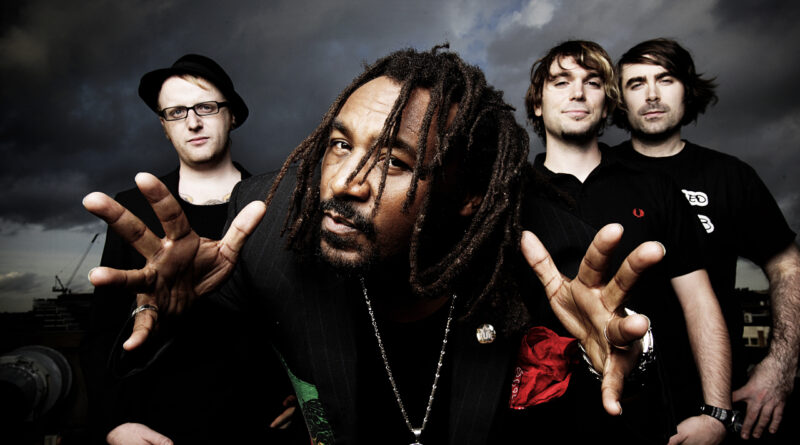

Skindred is a Welsh band that fuses Reggae and Nu Metal. Formed in Newport in 1998, they are well known for their energetic and interactive live performances and have won several awards including "Best Live Band" at the 2011 UK Metal Hammer Golden Gods Awards and the "Devotion Award" at the 2011 Kerrang! Awards.
I discovered this band a few months ago after a friend of mine played their song "Nobody" and I've been hooked ever since. I enjoy reggae, hip hop, and all types of metal, so Skindred's music is right up my alley! Their music genuinely gives me a rush of energy, especially while studying. I never knew something as loud and heavy as metal could be combined with a genre so light and calm as reggae, it's great!
Skindred Official Website 